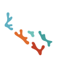

محادثة أقرب. مساحة أهدأ.
هدوء البحر
ضيافة تبدأ بالتفاصيل الصغيرة.
مكونات خفيفة لرحلة عربية من الاختيار إلى الوصول.
 Shebara جزيرة شيبارة
Shebara جزيرة شيبارةكل تفصيل، في مساحته
بدّل الحالة أعلى كل مكوّن لمراجعة التفاعل والتفاصيل.

رفيق رحلتكهنا لترتيب تفاصيل إقامتك
تفاصيل رحلتك، بهوية البحر الأحمر الدولية
صفحة A4 بهوامش طباعة آمنة. تُحدّث بيانات الضيوف من آخر تعديل محفوظ.